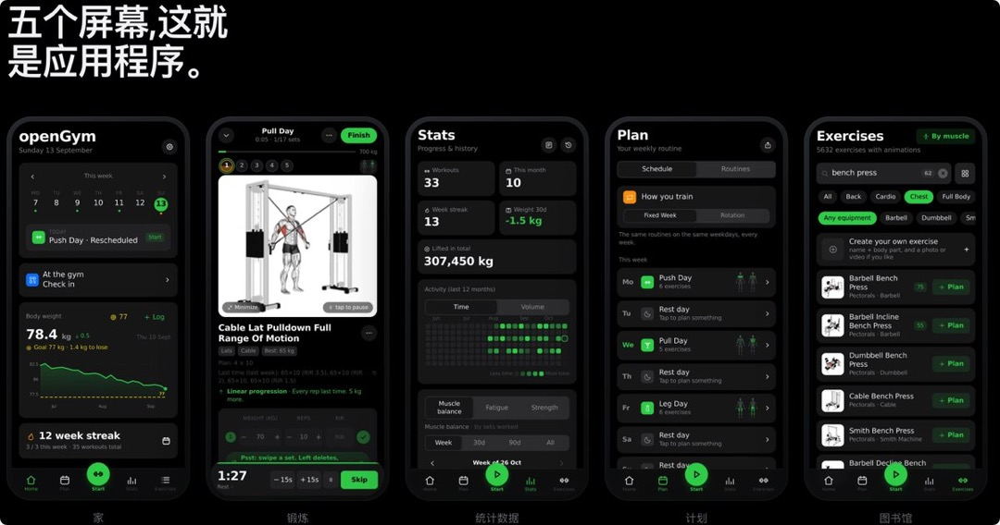

本期速览
02 Skill是行为指导Tool是原子操作
03 火山引擎MaaS毛利率超55%
04 Grok Bot按角色组队执行任务
05 openGym开源健身配AI教练
07 Anthropic制药聚焦工程摩擦
01｜代码Review按风险分级而非逐行看
来源（X） · @ZJM330 · 2026-10-30 22:54
我的看法：逐行人工 review 确实跟不上 agent 产出，但支付、登录、权限这类改动出错代价不对称，更现实的是按风险分级，高风险仍留人看。
https://x.com/dhh/status/2116109588554498081
引用内容
DHH @dhh
中文译文
真正的AI精神错乱是认为"这不过是又一个工具"或"这不过是只随机鹦鹉"，以及"人类仍然需要审查每一行"。你得清醒过来。
原文
The real AI psychosis is thinking "this is just another tool" or "it's just a stochastic parrot" and "humans still need to review every line". You gotta snap out of it.
02｜Skill是行为指导Tool是原子操作
来源（X） · @Jerry_fsy · 2026-10-30 19:02
如果你已经会给 Agent 塞 Context、Memory、RAG，但一上手还是只会“一个大 Prompt 包打天下”——这篇就是给你的。
单 Agent 再聪明，也扛不住三件事：能力要可插拔、工具要可扩展、复杂任务要拆给人协作。对应就是 Skills、Plugins、Multi-Agents。
下面是这三部分需要注意的点：
第一，Skill不是Tool。
Tool可以理解为对于Agent来说是一个“原子操作”，Agent只想获得这个Tool的执行结果，Tool无法指导Agent去做什么。
而Skill是一份行为指导，Agent看到它后知道先做什么，后做什么。
Skill想解决的问题是让Agent在某一个领域成为“专家”。
第二，能力通过Plugin动态加载。
随着 Agent 的能力不断增加，如果工具、Skill、RAG 都写死在核心代码里，每接入一个新功能，就要修改代码、重新测试和发布。
Plugin 的作用，就是把核心逻辑与具体能力解耦：核心只负责运行循环和工具调度，具体功能由独立插件提供，按需动态加载。这样，无论是接入数据库，还是增加消息通知，都可以通过扩展插件完成，插件之间也相互隔离，让 Agent 在保持核心稳定的同时持续扩展能力。
第三，使用Sub-agents的主要目的：控制上下文/并发提高效率/隔离。
当我们使用主Agent的时候，如果遇到想执行一些操作，只是希望获得操作的最终结果，而不希望执行的中间结果（比如读取文件的内容）浪费有限的上下文，就可以使用Sub-agents来执行这些操作，最终接受相应的结果即可。
此外，有的时候，我们希望在主Agent执行的过程中，并行执行一些操作，也可以使用Sub-agents。
最后，如果想同时做重构的尝试和正常开发，通过Sub-agents隔离也是一种方法。
03｜火山引擎MaaS毛利率超55%
来源（X） · @latepostnews · 2026-10-30 21:53
《晚点 LatePost》独家了解到，字节跳动旗下云服务平台火山引擎的 MaaS（模型即服务）业务收入达到 48 亿元，毛利率超过 55%，这也是字节跳动当前收入规模最大的 AI 业务。 https://x.com/i/article/2116165775291793412
04｜Grok Bot按角色组队执行任务
来源（X） · @0xluffy_eth · 2026-10-30 18:36
1. 把 @bot 接进你的 𝕏 私信
马斯克原话：“最好用的方式。”
2. 在任何帖子下 @bot
在回复里 @bot，任务就会转进你的私密 Bot 聊天。
3. 把 bot 当集群来跑
每个 bot 只给一个角色，喂给它文件和技能。提示词：“现在分头行动，组队完成［任务］。”
4. Cursor 团队内部怎么用 Bot（示例团队）
→ 销售 bot 每晚发简报
→ 工程 bot 给 bug 分类、提工单
→ 市场 bot 对照品牌语调检查文案
→ 数据 bot 用只读权限回答问题
5. 把任务变成技能
一个任务跑通了，就存成技能。再设成例行任务，让它自己跑。
6. 用演示来教它
用“教一个任务”功能，演示一遍浏览器里的操作流程。
7. 审批别关
团队建议：涉及敏感信息时保持审批开启。
收藏这些技巧，别忘了。
05｜openGym开源健身配AI教练
来源（X） · @grgerwcwetwet · 2026-10-30 19:57
项目叫 openGym，完全免费、无广告、无订阅，功能相当硬核：
1、内置 5600+ 健身动作，附带动画演示。
2、自动制定训练计划，记录重量、组数和休息时间。
3、肌肉热力图，直观看出哪里练到了、哪里还没练。
4、支持 AI 教练，根据训练记录给出调整建议。
5、支持 iPhone、Android、Apple Watch，还能 Docker 私有部署。
最舒服的是，健身数据自己掌控，不用每个月给健身 App 交会员费！
GitHub：https://github.com/DuarteSantos8/openGym
在线体验：https://opengym.ch/

06｜Bot接入瑞幸MCP实现点单
来源（X） · @shenpengwdh · 2026-10-30 16:20
他还整理了不少用法：滴滴打车、麦当劳点餐、高德地图，感兴趣的朋友可以看看他的分享。
也有人问：“Bot点的，会比手动点的好喝吗？”😄是一样的。以后会有越来越多的Agent帮忙打理这些重复的事，但是最终想喝什么，还是我们自己的选择。
最近大家聊把生活“全面AI化”。我自己也在用Oura Ring看心率和睡眠。平时也会让AI算算每天吃的热量，以后它再了解我的口味、预算和日程，帮我把餐点好，就不用每天纠结吃啥了～
往深了想，这会改变整个竞争逻辑。
Agent替用户货比三家，商家想单靠吸引注意力赢得订单，会越来越难。产品好不好、价格实不实惠、服务靠不靠谱，会更直接地影响下单。
谁能给用户带来实实在在的价值，谁就更有机会被选中。
对认真做产品的公司来说，这反而是最好的时代。
07｜Anthropic制药聚焦工程摩擦
来源（X） · @grapeot · 2026-10-30 11:04
可就在几天后的 10 月 27 日，Anthropic 公布了最新的药物研发进展：不仅和六家生物医药机构达成了深度合作，还在湿实验中实现了超越临床标准药的数据表现，更收购了一家制药公司并成立了自营制药公司 Mithril Medicine。在一个生物世界连可靠的物理模拟器都没有的时代，一个 LLM 究竟是如何推动新药研发的？
拆开这六个真实的管线会发现，Claude 真正在实验室里跑通的路线，从来不是当灵光一现的神医去做核心科学决断，而是帮科学家打下手，解决那 80% 最折磨人的工程摩擦：
第一，在物理模拟器都不靠谱的时候，帮科学家换个能算的题。AlphaFold 擅长算刚性积木，但遇到细胞里像软面条一样乱晃的柔性尾巴，或者慢动作撬开过敏分子的动态过程，模拟软件直接交白卷。Claude 不去死磕物理模拟，而是翻遍两百多篇文献把现成的信号模块整理成词典重新拼装，把抗癌免疫细胞的信号尾巴砍短约 70%，让癌细胞探测器产量暴增约 10 倍；在重度食物过敏项目里，它把动态撬锁题换成静态门折页几何题，一个月内筛出 20 个能把过敏分子从细胞表面强行撬下来的抗体，3 个效果超过现有临床标准药。
第二，现成软件卡死、实验仪器报假账时，钻进底层修Bug。在抗体耐热测试里，第一轮七种预测模型全军覆没，仪器自带质控软件把一半以上实验孔标为废数据。人类研究员督促Claude调出几千条原始激光升温曲线逐一排查，抓到了仪器软件的荒唐漏洞：有些抗体在高温下像煮鸡蛋一样结块沉淀，仪器公式分不清受热展开和高温结块，把耐热分数算成一团乱麻。Claude重写物理打分公式抢救回四百多个实验孔，帮团队选出耐热提高18摄氏度的分子。
第三，死板代码+超级项目经理抹平压垮救命药的管理成本。Enveda 用 Python 逐页账本把 Claude 关进合规笼子审核一千多页临床批记录，不仅找齐人工审出的问题，还多揪出 7 处人类漏掉的偏差，把近 26 小时人工耗时压到 2.8 小时。更动人的是儿童先天性肌营养不良这类超罕见病，欧美患者不到 5,000 人，因为要同时协调 11 家外包实验室，传统药企雇二三十人管理团队的固定成本直接判了罕见病死刑。而在 Mithril，一位创始科学家单枪匹马带 Claude 统管这 11 家外包商，不到 18 个月跑通患病小鼠验证，让小鼠肌肉力量恢复到近两倍。
一旦没有真实实验反馈，仅凭大模型瞎选方案，五个前沿模型盲测打分跟抛硬币差不多；科学家漏掉一条底线规则，算法甚至会把免疫细胞的报警开关全删掉，造出指标满分却不会开火的瞎子细胞。AI 不用当无所不知的神医，只要老老实实钻进工程死角，把算不出的题换成现成的、把失真的仪表调准、把压垮救命药的管理摩擦抹平，就已经足够改变科学探索的经济账了。
完整分析请见长文：
https://yage.ai/share/anthropic-drug-development-legwork-20261029.html?utm_source=twitter&utm_medium=thread&utm_campaign=anthropic-drug-development-legwork-20261029